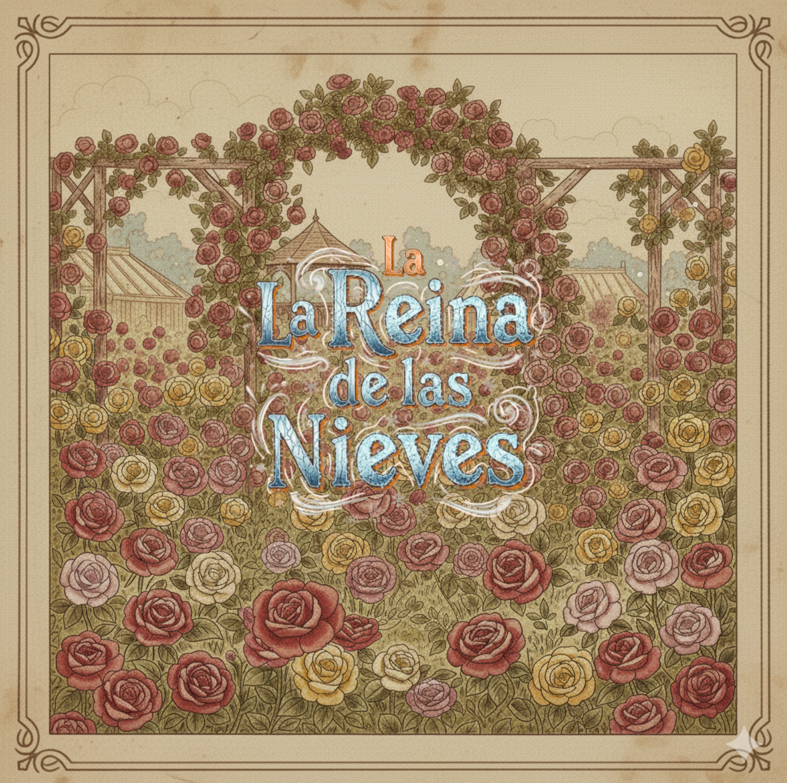
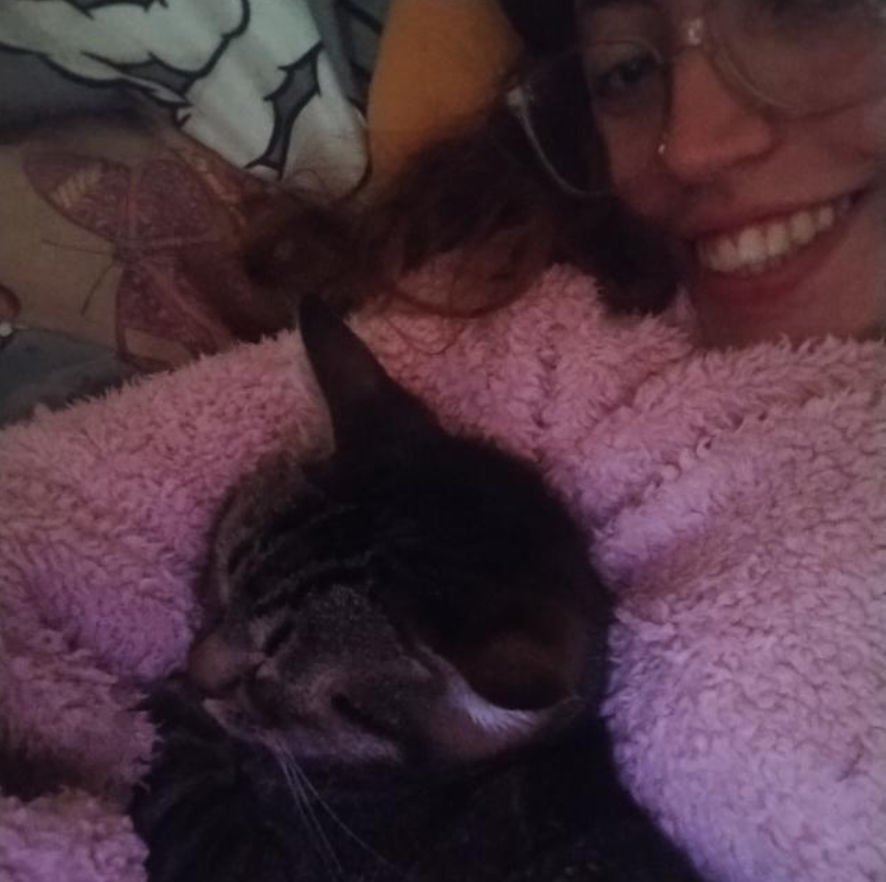

La Reina de las Nieves
En nuestra comisión, teníamos que hacer una aventura gráfica en base a un cuento clásico; a mí me tocó "La Reina de las Nieves" de Hans Christian Andersen. Esta historia nos habla sobre la importancia del amor y la amistad, y es uno de los relatos clásicos infantiles más reconocidos, llegando a inspirar miles de adaptaciones como "Frozen" de Disney.
Conceptualización
Lo primero que hice, fue realizar nuestro diagrama de flujo generando los diferentes finales posibles y barajando las distintas decisiones disponibles para que el usuario pueda elegir su propio camino. En esta etapa, lo más difícil fue transformar y ramificar la narrativa original sin perder el hilo central de la historia.
Estética
Para el tratamiento visual me inspiré en los libros infantiles de época y en grandes ilustradores que dieron vida a personajes como "Petter Rabbit", o "Alicia en el País de las Maravillas". En comunicación con la IA, le pedí que genere imágenes en tonos sepia y desgastados, con un estilo ornamental, detallado, pero tan expresivo como sencillo para un niño de interpretar.

Integrantes
Hola, soy Lina Alonso Citón. Al comenzar el proyecto me resultó tedioso y complejo abordarlo, pero luego, al momento de definir una identidad visual y comenzar a darle forma al relato, me entretuve moldeando la historia, geerando escenarios, y jugando con mi propia aventura gráfica.